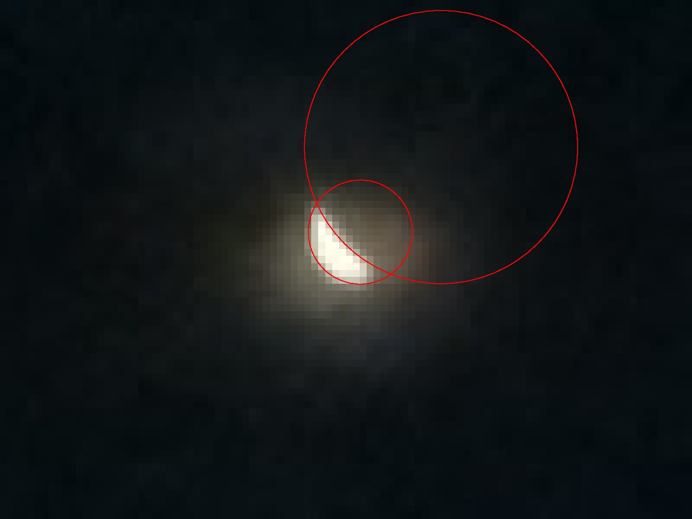
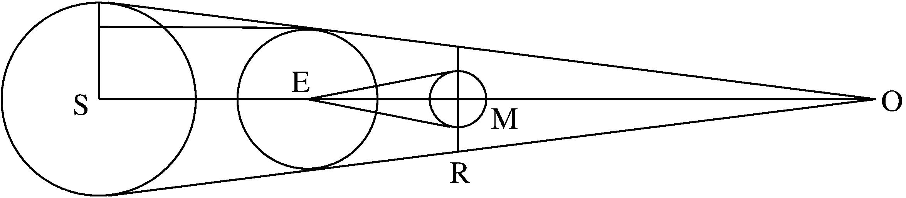

Physics P.2: Measuring the Diameter Ratio of Moon and Earth
Prerequisites: I photographed a lunar eclipse with a
digital camera.

The ratio of the diameters of Earth's
shadow and the Moon's disk is, according to literature, = 2.66,
as is the ratio of the diameters of the circumscribed red
circles. So, my observation is in agreement with literature
value. From the image it is clear that the deviation is not
greater than \(10 \%\)

As you see in the figure, the angle \(\varphi '\) at \(O\) will be
measured as
$$ \tan \left(\frac{\varphi '}{2}\right) = \frac{R_S-R_E}{d_S}
= \frac{R_S-R_E}{R_S}\cdot\tan \left(\frac{\varphi }{2}\right)
= \left(1-\frac{R_E}{R_S}\right)\cdot
\tan \left(\frac{\varphi }{2}\right) $$
where \(d_S\) be the distance of the Sun, and \(\varphi \)
be the angular diameter of Sun and Moon on the sky on Earth.
The distance \(d_E\) of the Earth \(E\) to the observer \(O\)
will then be
$$ d_E = \frac{R_E}{\tan \left(\frac{\varphi '}{2}\right)} $$
The distance of the Moon, again, will be
$$ d_M = \frac{R_M}{\tan \left(\frac{\varphi }{2}\right)} $$
Now, the shadow of the Earth on the Moon during a lunar eclipse
has the radius
$$ R = (d_E-d_M)\cdot\tan \left(\frac{\varphi '}{2}\right) $$
which, collecting all formulae together, relates to the radius of
the moon as
$$ \varrho := \frac{R}{R_M} =
\frac{R_E-R_M\cdot\left(1-\frac{R_E}{R_S}\right)}{R_M} $$
or, equivalently
$$ \xi := \frac{R_M}{R_E} = \frac{1}{1-\frac{R_E}{R_S} + \varrho }
> \frac{1}{1+\varrho } $$
Now, since we know (from Experiment P.3)
$$ \frac{R_S}{R_M} > 20 $$
we get immediately
$$ \frac{R_S}{R_E} > \frac{20}{1+\varrho } $$
or
$$ \frac{R_E}{R_S} < \frac{1+\varrho }{20} $$
Which means
$$ \frac{1}{0.95(1+\varrho )} > \xi > \frac{1}{1+\varrho } $$
and this furnishes, collecting all errors with
Theorem T.1
$$ \xi = 0.280 \pm 0.077 $$
in whose error bounds the exact value is contained according
to Wikipedia.